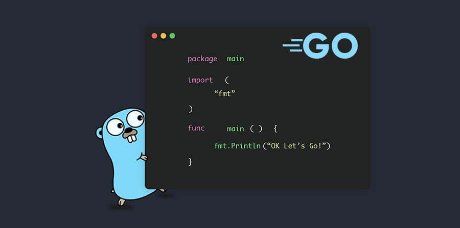

Un lenguaje de programación es, como su nombre indica, un lenguaje como podría ser el inglés. La diferencia es que sirve únicamente para comunicarse con una máquina y controlar su comportamiento. Existen una gran cantidad de lenguajes de programación creados para diferentes objetivos. Todos ellos tienen un conjunto de reglas sintácticas y semánticas que sirven para definir el tipo de datos con los que se puede trabajar con ellos y, en consecuencia, el tipo de acciones que se pueden llevar a cabo con ellos.